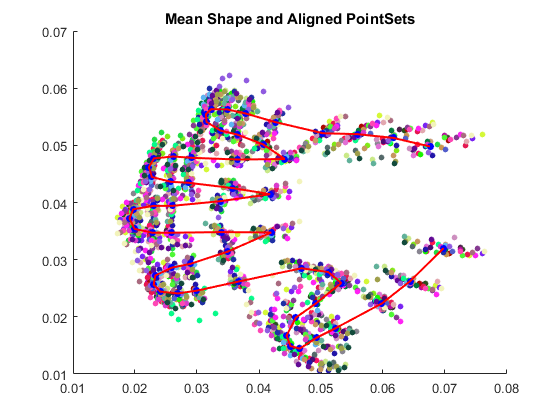

Que2
- Code for alignment of two point sets is in 'alignment.m'
- Code for finding optimal mean shape per iteration is in 'optimal_mean.m'
- Rest of the code including calculation of 'Modes of Variation' is implemented below.
Contents
Allign Points and Find Mean Shape
clear all;
load('../data/hands2D.mat');
N = 40;
K = 56;
z_a = shapes;
z = z_a;
z_mean = sum(shapes,3)./N;
step = 1;
iter = 0;
while step > 10e-7
[z,z_mean_opt]=optimal_mean(z,z_mean);
a = bsxfun(@minus,z,z_mean_opt);
err = sum(sum(sum(a.*a)));
step = sum(sum((z_mean-z_mean_opt).^2));
z_mean = z_mean_opt;
iter = iter+1;
end
Plot of Orignal Point Set
figure();
S = repmat(20,K,1)';
for i =1:N
C = repmat(rand(1,3),K,1);
scatter(z_a(1,:,i),z_a(2,:,i),S,C,'filled');
hold on;
end
hold off;
title('Orignal Data PointSets');
Plot of mean shape with aligned point
figure();
S = repmat(20,K,1)';
for i =1:N
C = repmat(rand(1,3),K,1);
scatter(z(1,:,i),z(2,:,i),S,C,'filled');
hold on;
end
S = repmat(30,K,1)';
C = repmat([0,0,1],K,1);
scatter(z_mean(1,:),z_mean(2,:),S,C,'filled');
line(z_mean(1,:),z_mean(2,:),'Color','r','Linewidth',1.5);
hold off;
title('Mean Shape and Aligned PointSets');

Calculate and Plot Eigen Values
a = bsxfun(@minus,z,z_mean);
x = [a(1,:,:) a(2,:,:)];
x = reshape(x,[112,40]);
Ca = (x*x')./N;
[V,E] = eig(Ca);
eig_values = diag(E);
figure();
plot(flipud(eig_values),'b');
ylabel('Magnitude');
xlabel('Eigen Values');
title('Plot of Variance (Eigen Values)');
Calculate and Plot Principal Modes Of Variation
S = repmat(20,K,1)';
z_a = [z_mean(1,:) (z_mean(2,:))]' ;
eig = [112 111 110];
for i = 1:3
pmv1=z_a-2*sqrt(eig_values(eig(i)))*V(:,eig(i));
p = zeros(size(z_mean));
p(1,:) = pmv1(1:end/2);
p(2,:) = pmv1(end/2+1:end);
pmv2=z_a+2*sqrt(eig_values(eig(i)))*V(:,eig(i));
p2 = zeros(size(z_mean));
p2(1,:) = pmv2(1:end/2);
p2(2,:) = pmv2(end/2+1:end);
figure();
set(gcf,'units','centimeters','position',[0 0 35 8]);
axis normal
subplot(1,3,1);
scatter(p(1,:),p(2,:),S,C);
pa = line(p(1,:),p(2,:),'Color','r','Linewidth',2);
subplot(1,3,3);
scatter(p2(1,:),p2(2,:),S,C);
pc = line(p2(1,:),p2(2,:),'Color','g','Linewidth',2);
subplot(1,3,2);
scatter(z_mean(1,:),z_mean(2,:),S,C);
pb = line(z_mean(1,:),z_mean(2,:),'Color','b','Linewidth',2);
legend([pa pb pc],'-2*{\surd}\lambda','Mean','+2*{\surd}\lambda');
title(strcat('Modes of Variation for ',' Eigen Value:',num2str(i),' = ',num2str(eig_values(eig(i)))));
figure();
for k =1:N
C = repmat(rand(1,3),K,1);
scatter(z(1,:,k),z(2,:,k),S,C,'filled');
hold on;
end
scatter(p(1,:),p(2,:),S,C);
pa = line(p(1,:),p(2,:),'Color','r','Linewidth',2);
hold on;
scatter(p2(1,:),p2(2,:),S,C);
pc = line(p2(1,:),p2(2,:),'Color','g','Linewidth',2);
scatter(z_mean(1,:),z_mean(2,:),S,C);
pb = line(z_mean(1,:),z_mean(2,:),'Color','b','Linewidth',2);
legend([pa pb pc],'-2*{\surd}\lambda','Mean','+2*{\surd}\lambda');
title(strcat('Modes of Variation for ',' Eigen Value:',num2str(i),' = ',num2str(eig_values(eig(i)))));
hold off;
end